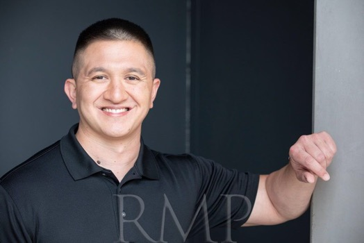

JAMES
FEDOS
Film and television actor with experience in dramatic, military, law-enforcement, authority, and action-oriented roles. A U.S. Coast Guard veteran with extensive tactical, weapons, martial arts, and stage-combat experience.
Actor
James Fedos is an American film and television actor whose professional background brings practical authenticity to military, law-enforcement, government, and authority roles.
His screen work includes supporting roles across independent film and television productions. His performance background is complemented by extensive experience in martial arts, tactical movement, firearms, stage combat, and weapons choreography.
Outside acting, Fedos is a published novelist and founder of Fedos Literary & Strategic Writing, bringing a writer's understanding of character, dialogue, story, and cinematic structure to his work on screen.
Based: Virginia / Available for Los Angeles & nationwide work
Film & Television: Supporting
Specialties: Military, Tactical, Law Enforcement, Authority, Action
Additional: Novelist | Founder | U.S. Coast Guard Veteran
Headshots

Selected Film & Television
| Production | Role | Director / Production |
|---|---|---|
| Most Dangerous | Supporting | Jake Bohringer |
| Johnny Z | Supporting | Johnathan Straiton / Black Mandala Films |
| Life | Supporting | Mustujab Kirmani / Silicon Mango Studios |
| In-Lawfully Yours | Supporting | Robert Kirbyson / Home Theater Films |
| The House of Madness | Supporting | Jeffery Bowie, Jr. |
| Knight's End | Supporting | Timothy Paul Taylor |
| C.E.O. | Supporting | Antwon Temoney / TeMoney World Productions |
| Shape Your World | Supporting | Patrick Mason |
| Love Street Detour | Supporting | Barking Man Productions |
| Classifyd | Supporting | Gregory Blanch |
Training & Special Skills
Performance
DC Stunt Coalition — stage combat, bladed weapons, firearms, choreography, rolling, falling, tumbling, and weapons safety.
Martial Arts
Filipino martial arts (Kali), stick and knife work, Muay Thai, grappling, Kung Fu, and combat movement.
Military / Tactical
U.S. Coast Guard maritime law enforcement, tactical law enforcement, search and rescue, emergency response, surface swimming, and natural-disaster response.
Weapons
Experience with shotgun, crew-served machine gun, M-16, M-240B, M-60, SIG, .40, Beretta 9mm, less-lethal weapons, ASP baton, firearms safety, and firearms choreography.
Acting Training
Actors Workshop — Acting with an Audience, Ed Claudio, Sacramento, California.
Professional Background
Published novelist, founder, U.S. Coast Guard veteran, and longtime federal-program professional.
Professional Profiles
Casting, production, representation, and industry professionals can view additional credits and professional information below.
Contact
For casting, representation, production, and professional inquiries.